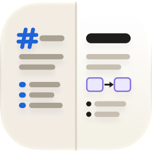

Markdown lesen und bearbeiten: Rohtext, geteilte Ansicht oder die fertige Seite, in die du direkt schreibst. Für Mac, iPhone und iPad.
Ohne Konto, ohne Werbung, ohne Tracking, ohne Abo. Markdown Edit zeigt eine Datei als Rohtext mit Farben, geteilt oder als fertige Seite. In der fertigen Seite klickst du in einen Absatz und schreibst; zurück in die Datei geht nur der geänderte Block, der Rest bleibt Zeichen für Zeichen gleich. Auf Deutsch und Englisch, ein Kauf für Mac, iPhone und iPad.
Wie öffne ich eine Datei? Am Mac mit ⌘O, per Doppelklick im Finder oder indem du sie auf das Symbol ziehst; sie erscheint als neues Tab im vordersten Fenster. In den Einstellungen kannst du auf «In neuem Fenster» umstellen. Auf iPhone und iPad wählst du die Datei im Dateibrowser, der beim Start erscheint.
Markdown-Dateien immer mit dieser App öffnen. Beim ersten Start fragt die App
einmal; sagst du Ja, öffnet ein Doppelklick im Finder von da an hier. Später geht es in den
Einstellungen unter «Standard-App». Einen Schalter zurück gibt es nicht: macOS kann die Rolle
vergeben, aber nicht zurücknehmen. Wähle dazu im Finder «Informationen» einer
.md-Datei und dort ein anderes Programm.
Ein Bild neben der Datei wird nicht gezeigt. Die App darf nur die Datei lesen, die du geöffnet hast. Für Bilder daneben braucht sie einmal deine Erlaubnis für den Ordner: Tippe oder klicke auf den Knopf im leeren Bild und wähle den Ordner oder einen weiter oben. Die Erlaubnis bleibt auf dem Gerät und lässt sich in den Einstellungen wieder entfernen. Bilder aus dem Internet erscheinen ohne Erlaubnis.
Wo landen eingefügte Bilder? In einem Ordner neben deiner Datei, der so heisst
wie sie (Bericht.assets/), verlinkt mit einem relativen Pfad. So lässt sich das
Dokument mitsamt seinen Bildern verschieben. Ein Bild, das schon im Ordner des Dokuments liegt,
wird nur verlinkt. Ein noch nie gesichertes Dokument sichert die App zuerst.
Diagramme ändern, ohne Mermaid zu können. Klick ein Flussdiagramm an: Über dem Bild erscheint eine Leiste mit «Knoten +», «Verbindung +» und «Quelltext». Ein Doppelklick auf einen Knoten benennt ihn um, die Löschtaste entfernt ihn mit seinen Verbindungen. Der Knopf «Erweitert» zeigt eine zweite Zeile: Form und Farbe des gewählten Knotens, Linie und Pfeil der gewählten Verbindung, dazu Kurven (gebogen, gerade, rechtwinklig) und die Richtung des ganzen Diagramms. Andere Diagrammarten bearbeitest du mit einem Doppelklick als Quelltext. Auf iPhone und iPad tippst du einen Knoten, eine Verbindung oder das Diagramm an; unten erscheint ein Feld mit grossen Knöpfen für dieselben Möglichkeiten.
PDF und Word. «Ablage > Als PDF exportieren» zeigt zuerst die Seiten: Du
wählst Papierformat, Ausrichtung, Ränder, die Schriftgrösse des normalen Texts in Punkt,
Seitenzahlen und «Jedes Kapitel auf neuer Seite». Die Wahl merkt sich die App, ⌘P druckt dieselben
Seiten. «Als Word exportieren» schreibt ein .docx mit Überschriften, Tabellen, Listen,
Links, Bildern und den Diagrammen als Bild.
Quick Look im Finder. Markiere eine .md-Datei und drücke die
Leertaste: Die Vorschau zeigt dieselbe Seite wie die App, mit Diagrammen, Tabellen und farbigem
Code, hell oder dunkel nach System. Die Vorschau darf nur diese eine Datei lesen; statt eines
Bildes daneben steht darum ein Hinweis. Öffne das Dokument in der App, dann erscheint das Bild.
Dieselbe Datei auf Mac und iPhone. Leg deine Dokumente in iCloud Drive ab, dann gleicht macOS und iOS sie ab, und du öffnest überall dieselbe Datei, mit den Versionen des Systems. Einen eigenen Abgleich hat die App nicht und braucht sie nicht.
Wo sind die Einstellungen? Am Mac unter «Markdown Edit > Einstellungen» (⌘,), auf iPhone und iPad unter «Mehr» in der unteren Leiste. Dort stehen: öffnen in Tab oder Fenster, die Ansicht beim Öffnen, Bearbeiten in der gerenderten Ansicht, Schrift und Schriftgrösse des Rohtexts, Zoom, hell oder dunkel, die Standard-App und die Ordner mit Zugriff.
Bleiben meine Dokumente privat? Ja. Die App hat kein Konto und keinen Server und schickt nichts weg. Deine Dateien liegen dort, wo du sie hast. Aus dem Internet lädt die App nur ein Bild, das in deinem Dokument verlinkt ist.
Ein Fehler, oder fehlt dir etwas? Schreib an apps@ceccato.ch, am besten mit dem Dokument, bei dem es auffällt, und einem Bildschirmfoto.
Bald im App Store als «Markdown Edit» · Datenschutz
No account, no ads, no tracking, no subscription. Markdown Edit shows a file as coloured raw text, as a split view or as the finished page. In the finished page you click into a paragraph and type; only the changed block goes back into the file, the rest stays the same character for character. In English and German, one purchase for Mac, iPhone and iPad.
How do I open a file? On the Mac with ⌘O, with a double click in the Finder or by dropping it on the icon; it opens as a new tab in the front window. Settings can switch that to a new window. On iPhone and iPad you pick the file in the document browser that opens with the app.
Always open Markdown files with this app. On the first launch the app asks
once; if you say yes, a double click in the Finder opens the file here from then on. Later you
find the same button in Settings under “Default App”. There is no switch back: macOS can hand the
role over but not take it away. To change it, use “Get Info” on a .md file in the
Finder and pick another program there.
An image next to the file does not show. The app may only read the file you opened. For images beside it, it needs your permission for that folder once: tap or click the button in the empty image and choose the folder, or one further up. The permission stays on your device and can be removed again in Settings. Pictures from the internet appear without any permission.
Where do inserted images go? Into a folder next to your file, named after it
(Report.assets/), linked with a relative path, so the document can be moved together
with its images. An image that already lies in the document's folder is only linked. A document
that has never been saved is saved first.
Changing a diagram without knowing Mermaid. Click a flowchart: a bar appears above it with “Node +”, “Connection +” and “Source”. A double click on a node renames it, the delete key removes it with its connections. The “Extended” button adds a second row: shape and colour of the selected node, line and arrow of the selected connection, plus curves (curved, straight, right angles) and the direction of the whole diagram. Other kinds of diagram are edited as source text on a double click. On iPhone and iPad you tap a node, a connection or the diagram; a panel with large buttons for the same choices comes up at the bottom.
PDF and Word. File > Export as PDF first shows the pages: you choose paper
size, orientation, margins, the font size of normal text in points, page numbers and “Each chapter
on a new page”. The app remembers your choice, and ⌘P prints the same pages. “Export as Word”
writes a .docx with headings, tables, lists, links, images and the diagrams as
pictures.
Quick Look in the Finder. Select a .md file and press the space
bar: the preview shows the same page as the app, with diagrams, tables and coloured code, light or
dark like the system. The preview may read only that one file, so an image beside it is replaced
by a note. Open the document in the app and the image appears.
The same file on Mac and iPhone. Keep your documents in iCloud Drive: macOS and iOS sync them, so you open the same file everywhere, with the versions the system keeps. The app has no sync of its own and needs none.
Where are the settings? On the Mac under Markdown Edit > Settings (⌘,), on iPhone and iPad under “More” in the bottom bar. There you find: open in a tab or a window, the view a document opens in, editing in the rendered view, font and font size of the raw text, zoom, light or dark, the default app and the folders with access.
Do my documents stay private? Yes. The app has no account and no server and sends nothing anywhere. Your files stay where you keep them. From the internet the app loads only a picture that your own document links to.
Something wrong, or something missing? Write to apps@ceccato.ch, ideally with the document it shows up in and a screenshot.
Coming to the App Store as “Markdown Edit” · Privacy